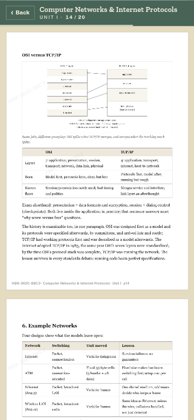
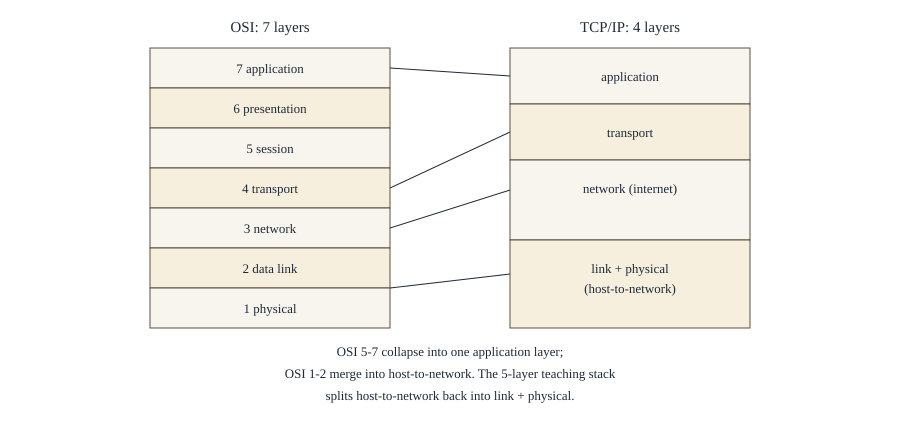
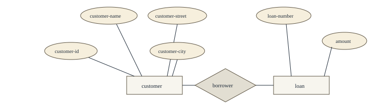
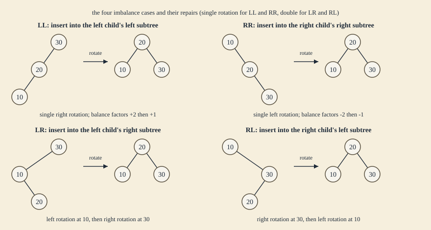
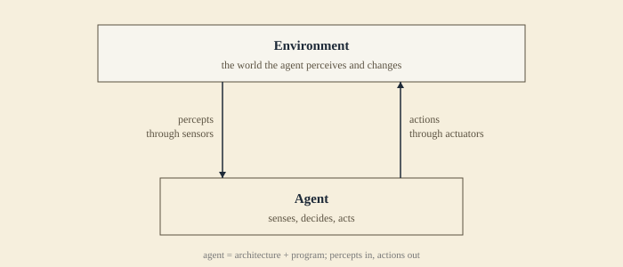
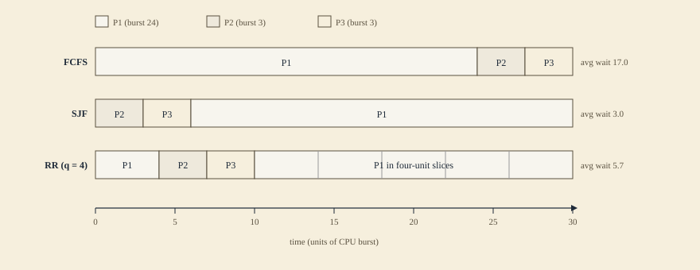
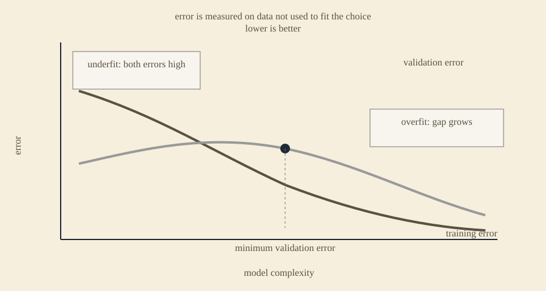

Introducing the library
The textbook, rebuilt for the phone.
Eleven subjects, set again from the R23 syllabus. Every diagram redrawn. Every page streamed inside Telegram, one at a time.
In rollout. The shelf is loaded; the doors open semester by semester.

01The shelf
Only what I have set.
The shelf follows your roll number: branch, regulation, semester. If I have not cut a subject, it is not on the list. No empty folders, no dead links, no coming-soon rows.
Eleven CSE subjects across four semesters. Each one opens into its units; each unit is a stack of pages.
| Subject | Code | Units | Pages |
|---|---|---|---|
| 2-1 · Second year, first semester | |||
| Advanced Data Structures & Algorithm Analysis | 23CS21T1 | 5 | 132 |
| Object-oriented Programming Through Java | 23CS21T2 | 5 | 99 |
| Digital Logic & Computer Organization | 23IT21T1 | 5 | 132 |
| 2-2 · Second year, second semester | |||
| Database Management Systems | 23AD22T1 | 5 | 134 |
| Operating Systems | 23CS22T1 | 5 | 113 |
| Software Engineering * | 23CS22T2 | 1 | 27 |
| 3-1 · Third year, first semester | |||
| Artificial Intelligence | 23CS31T1 | 5 | 141 |
| Computer Networks & Internet Protocols | 23CS31T2 | 5 | 116 |
| Automata Theory And Compiler Design | 23CS31T3 | 5 | 130 |
| 3-2 · Third year, second semester | |||
| Machine Learning | 23CS32T1 | 5 | 97 |
| Cryptography & Network Security | 23CS32T3 | 5 | 127 |
* Software Engineering is Unit I only for now. The remaining units are still being cut.
02The reader
A page, not a PDF.
The reader opens full screen inside Telegram and hands you one page at a time. Scroll, and the next page arrives. Scroll past, and the old one is dropped.
There is no download button because there is no file to download.
- Delivery
- Pages are rendered on the server and sent as images. Your phone never assembles the document.
- The mark
- A faint per-reader watermark is baked into the pixels. It is hard to see at reading size and survives a screenshot.
- The limit
- No text layer, no share sheet, no file. What arrives is a picture of the page.

03The documents
I didn’t scan the textbook. I set it again.
Every document starts from the official R23 syllabus, not a photocopy. The text is typeset in HTML, the tables are rebuilt, the diagrams are drawn as SVG, and each unit is rendered to A4 with running heads, page numbers, and a coverage table at the front.
51 documents. 1,248 pages. 362 diagrams. The page you see is the page I made.

OSI and TCP/IP, with the comparison table.

The banking ER diagram, drawn in one piece.

Six AVL steps on one page.
Diagrams, not screenshots.
Six of 362 · all vector





A long note on the process: the syllabus, the page, the diagrams, and why a PDF was the wrong unit.
Read the making-of04The bot
Attendance, marks, and now the shelf.
NbkristQik already answers the questions you ask between classes. The library is the same bot, one more room: no install, no second account, no password.
- Attendance
- How much you have, and how much you can still miss.
- Mid marks
- What you scored, subject by subject.
- The library
- The shelf for your semester, when your doors open.
05Notes
From the register.
All notesThe library is opening.
Eleven subjects, 1,248 pages, and not a single PDF. The reading room is built; the doors open semester by semester.
The page is the product.
Why I rebuilt the textbook from the syllabus up, and what changes when the unit of design is a page instead of a file.